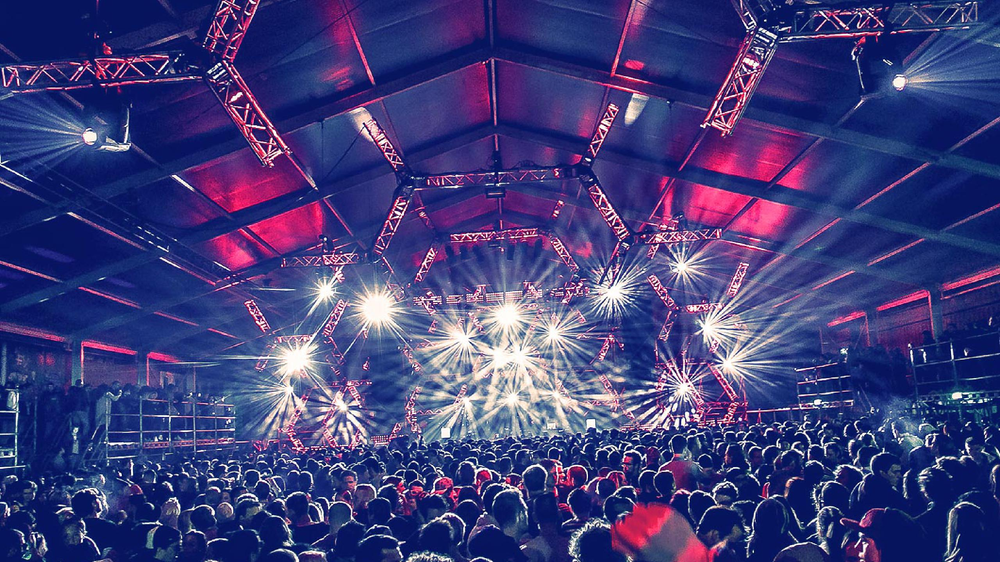
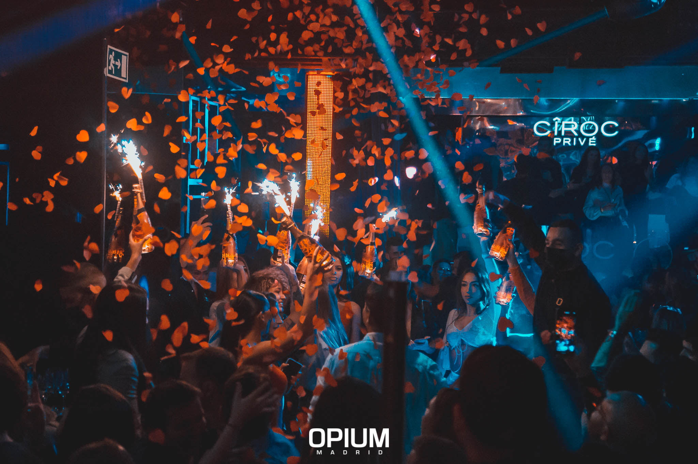
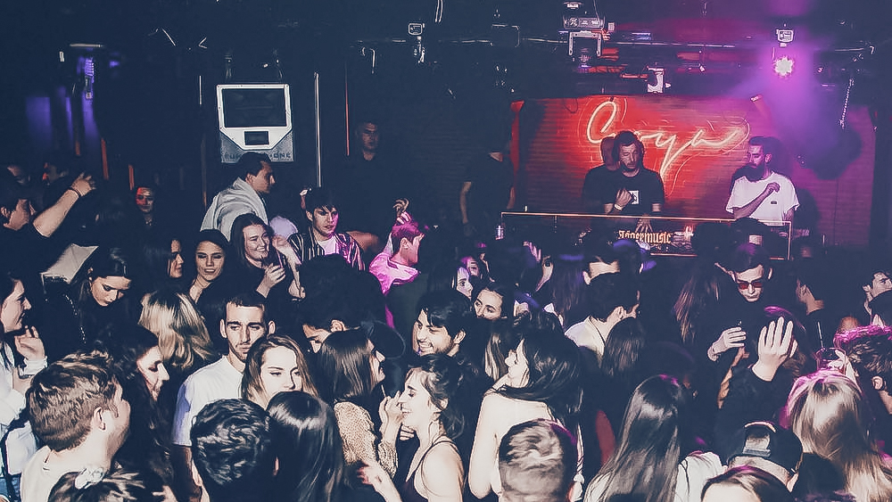
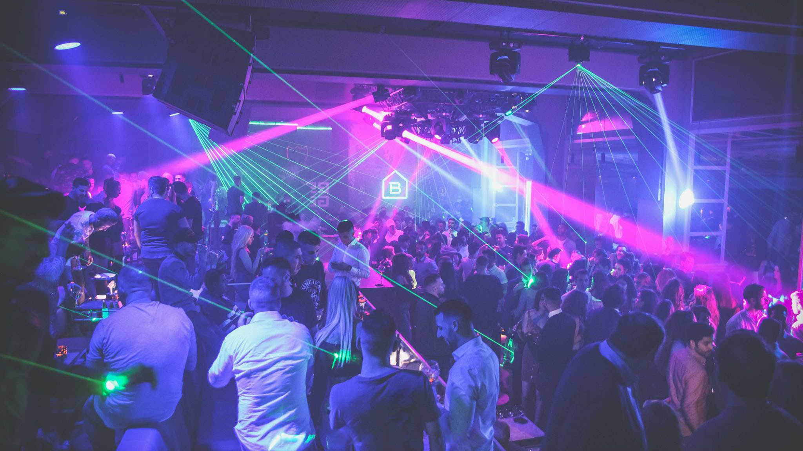
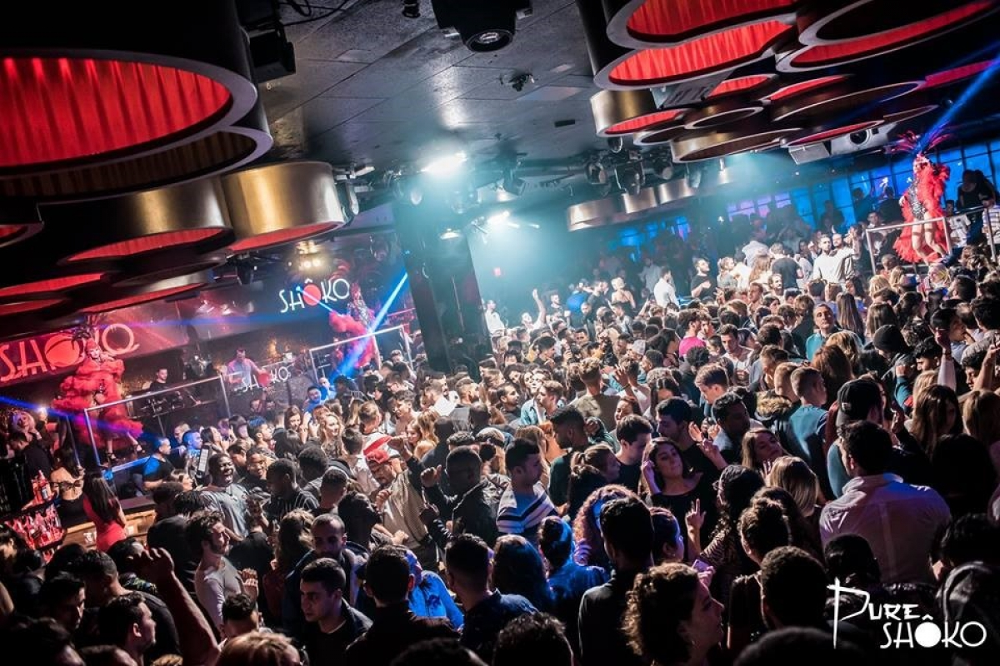

FABRIK

- Saturday 7:30PM - 6:00 AM
- Sunday - Friday (closed)
At Fabrik you can experience the unique atmosphere of the Ibiza club, characterized by a love of good music, the grandeur of the halls and a powerful sound system. Fabrik is known as a great club for techno and minimal music. To give you an idea for the lineup, Fabrik has featured artists such as Sven Wet, Jeff Mills, Ricardo Villalobos, Laurent Garnier, Loco Dice, Richie Hawtin, Maceo Plex and more over the past 13 years.
TEATRO BARCELÓ

- Thursday: 12:00 am - 5:30 am
- Friday: 12:00 am - 6:00 am
- Saturday: 12:00 am - 6:00 am
- Sunday - Wednesday (closed)
Built-in 1930 by Luis Gutierrez Soto, it was originally Madrid's most iconic theater. It wasn't until the 1980s that it became known as today's Club Teatro Barceló, a meeting place for lovers of music and nightlife.
OPIUM CLUB
 Calle de José Abascal, 56, 28003 Madrid, Spain
- Sunday 12–5:30AM
- Monday 12–5:30AM
- Tuesday 12–5:30AM
- Wednesday 12–5:30AM
- Friday 12–6AM
- Saturday 12–6AM
Opium Madrid is a trendy club located in the Chamberi area. This place is famous for its attractive customers and VIP tables. It is also a popular spot for football players and team officials after a Champions League match.
GOYA SOCIAL CLUB

Calle de Goya, 43, 28001, Madrid, Spain.
- Friday 12–6AM
- Saturday 12–6AM
- Sunday - Thursday (closed)
Inspired by the best clubs in Paris, London, or Berlin, you'll find the best house music in this city in the heart of Madrid. Whether you want to relax with a drink, dance to deep house, nu-disco, hits, or dance at home to the best sound system in town.
BLACKHAUS

Ctra. de La Coruña, Km. 8,700, 28023 Madrid, Spain
- Thursday 12–6:00AM
- Friday 12–6AM
- Saturday 12–6AM
- Sunday - Wednesday (closed)
Blackhaus is an elegant club and a versatile event space. The venue itself has a lot of history, and before it was completely refurbished and reopened, it had many names such as Buddha, Madrid, Cabaret, and Kudeta. The place is an elegant mansion on the highway. It consists of a club with several rooms, a restaurant, a bar and a terrace. It is about 10 minutes from the city center. The venue was created to accommodate the upper class of Madrid, including top club soccer players, actors and other gorgeous people in Madrid.
SHOKO MADRID

C. de Toledo, 86, 28005 Madrid, Spain
- Sunday 12–5:30AM
- Monday - Tuesday (closed)
- Wednesday 12–5:30AM
- Friday 12–6AM
- Saturday 12–6AM
Inspired by the best clubs in Paris, London or Berlin, you'll find the best house music in this city in the heart of Madrid. Whether you want to relax with a drink, dance to deep house, nudisco, hits, or dance at home to the best sound system in town.
- Friday 12–6AM
- Saturday 12–6AM
- Sunday - Thursday (closed)
- Thursday 12–6:00AM
- Friday 12–6AM
- Saturday 12–6AM
- Sunday - Wednesday (closed)
- Sunday 12–5:30AM
- Monday - Tuesday (closed)
- Wednesday 12–5:30AM
- Friday 12–6AM
- Saturday 12–6AM